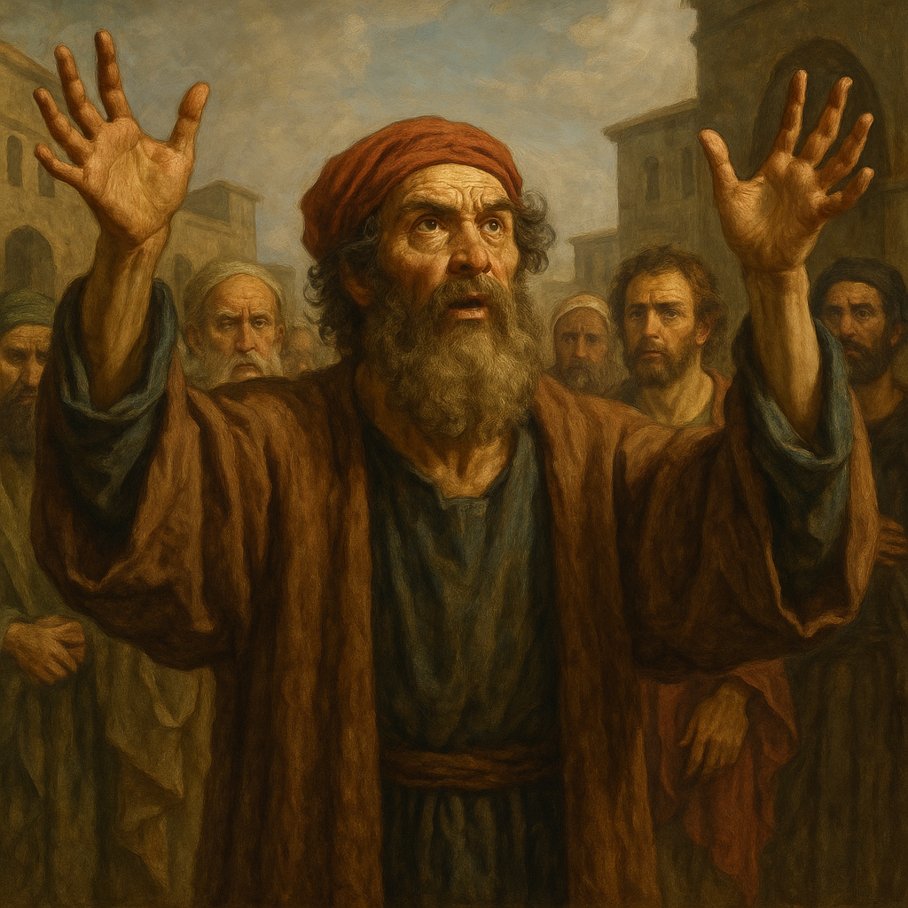

Jim Jones
1931-1978
Templo del Pueblo
- Se proclamó como encarnación de Cristo
- Mezcla de socialismo, comunismo y cristianismo
- Doctrina del "suicidio revolucionario"

Un análisis histórico y bíblico de quienes se han proclamado mesías o profetas, pero cuyos mensajes contradicen las enseñanzas cristianas fundamentales.
La Escritura nos advierte claramente acerca de aquellos que se presentarán como portadores de la verdad divina pero cuyo mensaje conduce al error.
En Deuteronomio 13:1-5, Moisés advirtió al pueblo sobre profetas que realizarían señales y prodigios pero incitarían a seguir a otros dioses. La prueba definitiva era si su mensaje conducía a apartarse del Dios verdadero.
Jeremías enfrentó a numerosos profetas que proclamaban paz cuando venía juicio (Jeremías 23:16-17). Ezequiel también condenó a aquellos que profetizaban "de su propio corazón" (Ezequiel 13:2-3).
"Guardaos de los falsos profetas, que vienen a vosotros con vestidos de ovejas, pero por dentro son lobos rapaces" (Mateo 7:15). Jesús también predijo que muchos falsos cristos y falsos profetas surgirían y realizarían grandes señales (Mateo 24:24).
Pablo advirtió sobre "lobos rapaces" que no perdonarían al rebaño (Hechos 20:29-30). Pedro y Juan advirtieron sobre falsos maestros que introducirían "herejías destructoras" (2 Pedro 2:1) y cómo poner a prueba los espíritus (1 Juan 4:1).
Juan advierte sobre el falso profeta que realizará grandes señales para engañar a los habitantes de la tierra (Apocalipsis 13:13-14), presentando esta figura como parte del triunvirato satánico.
A lo largo de la historia, numerosos individuos han proclamado ser mesías o profetas divinos y han desviado a muchos de la verdadera fe.

Mencionado en Hechos 8, se proclamaba como "la gran potencia de Dios". Intentó comprar el poder del Espíritu Santo, dando origen al término "simonía" para la compra de oficios eclesiásticos.
Leer másFundador del montanismo, afirmaba ser el "Paráclito" prometido por Jesús. Junto con sus profetisas Priscila y Maximila, predicaba un ascetismo extremo y anunciaba el inminente fin del mundo.
Leer másFundador del mormonismo, afirmaba haber recibido revelaciones divinas y traducido el Libro de Mormón de planchas de oro. Sus enseñanzas sobre Dios y la salvación contradicen doctrinas cristianas fundamentales.
Leer másFundador de la Iglesia de la Unificación, se proclamó como el "Señor del Segundo Advenimiento". Enseñaba que Cristo no completó su misión y que él había venido a finalizar la obra de redención.
Leer másFundador de Creciendo en Gracia, se proclamó primero como el apóstol Pablo reencarnado, luego como Jesucristo y finalmente como el Anticristo. Enseñaba que el pecado no existía para sus seguidores.
Leer más
Líder de los Davidianos en Waco, Texas, se proclamó como el "Cordero de Dios" capaz de abrir los siete sellos del Apocalipsis. Su interpretación apocalíptica culminó en un trágico asedio en 1993.
Leer másTabla comparativa de otros líderes religiosos que han promovido enseñanzas contrarias a la fe cristiana.
Jesucristo nos advirtió que en los últimos tiempos surgirían falsos profetas capaces de realizar señales y prodigios tan impresionantes que podrían engañar incluso a los escogidos. Es fundamental conocer las características que los identifican para no ser desviados del camino verdadero.
Aprender a discernir"Porque se levantarán falsos Cristos, y falsos profetas, y harán grandes señales y prodigios, de tal manera que engañarán, si fuere posible, aun a los escogidos. Ya os lo he dicho antes."
Mateo 24:24-25
La Biblia nos ofrece criterios claros para identificar a aquellos que pretenden hablar en nombre de Dios pero no son enviados por él.
Un verdadero profeta nunca contradirá la Palabra de Dios revelada en las Escrituras. Cualquier mensaje que se oponga a las verdades bíblicas fundamentales debe ser rechazado (Gálatas 1:8-9).
Los falsos profetas a menudo distorsionan la naturaleza y obra de Jesucristo, negando su deidad, humanidad o la suficiencia de su sacrificio expiatorio (1 Juan 4:1-3).
El deseo de enriquecimiento personal es una señal común de falsos maestros. Pedro advirtió sobre aquellos que "por avaricia harán mercadería de vosotros con palabras fingidas" (2 Pedro 2:3).
Los falsos profetas frecuentemente centran la atención en sí mismos en lugar de en Cristo, cultivando seguidores personales y exigiendo lealtad absoluta (Hechos 20:30).
La afirmación de poseer revelaciones exclusivas o conocimiento secreto no disponible para otros creyentes es una característica común de los falsos maestros (Colosenses 2:18).
Jesús enseñó que podríamos reconocer a los falsos profetas por sus frutos (Mateo 7:15-20). Sus vidas y ministerios carecen del fruto del Espíritu y revelan motivaciones carnales.